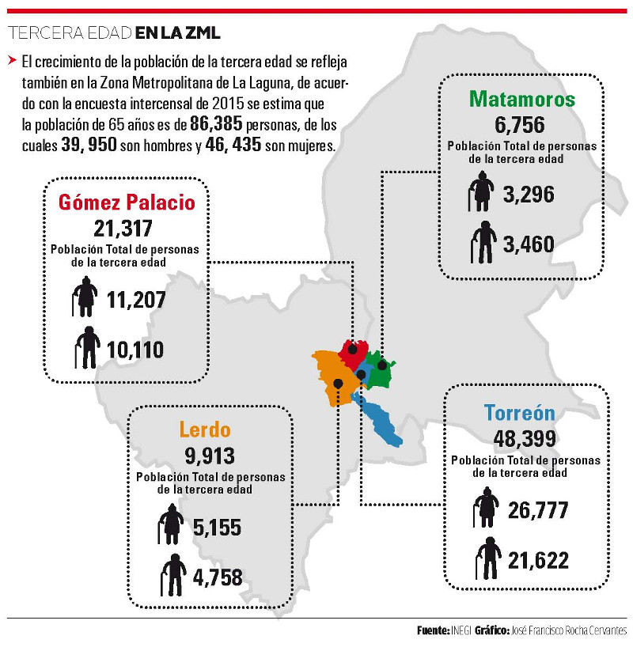

El aumento acelerado de la población de la tercera edad a nivel mundial se ha convertido en un tema de interés y preocupación para diferentes organizaciones internacionales como la ONU, la Organización Internacional del Trabajo (OIT) la Organización Mundial de la Salud (OMS) y las instituciones defensoras de los derechos humanos.
De acuerdo con la cifras de la ONU (2014) existen 600 millones de personas de 60 años y más, la cifra se duplicará en 2025 y para 2050 serán casi dos mil millones.
Para algunos especialistas la situación en México es seria; en agosto de 2015 existían en el país, 11 millones 669 mil 432, de los cuales 46 por ciento eran hombres y 54 por ciento mujeres.
Han señalado también que se estima que para 2030 el segmento de 65 años y más se incrementará 334 por ciento, en contraste con el de 15 a 64, que crecerá 45.5 por ciento, y el de cero a 14, que decrecerá 20 por ciento.
Para el INEGI las personas mayores de 60 años representan hoy el 7.2 % de la población total de 2015 y apunta como factores del envejecimiento de la población que la pirámide poblacional sigue la tendencia de reducir su base, mientras que continua el crecimiento tanto en el centro como en la cúspide.
El crecimiento de la población de la tercera edad se refleja también en la Zona Metropolitana de La Laguna, de acuerdo con la encuesta intercensal de 2015 se estima que la población de 65 años es de 86,385 personas, de los cuales 39,950 son hombres y 46,435 son mujeres.
Aunado a esto, CONAPO (Consejo Nacional de Población) considera dentro de sus proyecciones para 2020 que los municipios que conforman la Zona Metropolitana de la Laguna contarán con un total de 104,688 personas de la tercera edad, es decir de 65 años y más.
Los retos y los derechos humanos
La preocupación reside fundamentalmente en conocer la realidad de estas personas es decir, contar con un diagnóstico que permita establecer con claridad su ubicación, sus necesidades, carencias entre otras cosas, con la finalidad de diseñar e implementar una política pública capaz de atender las necesidades en el corto, mediano y largo plazo.
Uno de los retos ineludibles lo representa el respeto a sus derechos humanos, como el derecho a una vejez digna, pero ¿que implica una vejez digna? Entre otras cosas el derecho a estar libre de maltrato.
Para la OMS el maltrato de las personas mayores es un acto único o repetido que causa daño o sufrimiento a una persona de edad, o la falta de medidas apropiadas para evitarlo, que se produce en una relación basada en la confianza.
Este tipo de violencia constituye una violación de los derechos humanos e incluye el maltrato físico, sexual, psicológico o emocional; la violencia por razones económicas o materiales; el abandono; la negligencia; y el menoscabo grave de dignidad y la falta de respeto.
El derecho a la protección social
Es innegable que existe una relación de reciprocidad entre los derechos humanos y las acciones de protección social hacia las personas de la tercera edad. En este sentido el discurso de los derechos humanos necesita, para garantizarlos y poderlos exigir, del contexto institucional que permita su ejercicio.
De ahí la necesidad de garantizar que las instituciones encargadas de la protección social a este grupo, actúen apegadas a derecho bajo una constante evaluación y seguimiento de sus funciones.
Actualmente en nuestro país la protección social a los adultos mayores ha tenido claroscuros, aunque los programas asistenciales como Oportunidades, Progresa y 70 y más han logrado incrementar la cobertura de sus servicios, para el Banco Mundial, México es de los países con mayor rezago en este aspecto.
En este sentido es importante considerar este aspecto dentro del análisis de la situación de los adultos mayores en los municipios que integran la Zona Metropolitana de la Laguna.
El derecho a la sostenibilidad y la inclusión
En este aspecto la Zona Metropolitana de la Laguna no está preparada para responder a los retos que enfrentarán los adultos mayores en el corto, mediano y largo plazo.
Pensar solo en la infraestructura necesaria para su movilidad es un verdadero problema, pero la situación va más allá, se trata de lo que las ciudades deben proporcionar en conjunto a estas personas.
A propósito del tema, el Secretario General de las Naciones Unidas, Ban Ki-Moon en su mensaje con motivo del Día Internacional de las Personas de Edad del 1° de octubre de 2015 mencionó:
«Lograr ciudades inclusivas para las personas de edad significa crear oportunidades para su participación económica y social en entornos accesibles y seguros. También implica proporcionar viviendas asequibles y los servicios sociales y de la salud necesarios para que puedan envejecer en sus hogares.»
Estos son solo algunos de los aspectos relacionados con la situación de las personas de la tercera edad que se tendrían que estar estudiando para preparar estar en condiciones de satisfacer estas necesidades, ¿en realidad se están tomando en cuenta?
Son más de 86,000 personas de la tercera edad que le entregaron su vida productiva a esta región, coadyuvaron a su crecimiento, a su desarrollo, hoy la región tiene que responder con el mismo ímpetu a construir una región donde estas personas puedan vivir mejor.
| Municipio | Población total de adultos mayores | Hombres | Mujeres |
|---|---|---|---|
| Torreón | 48,399 | 21,622 | 26,777 |
| Gómez Palacio | 21,317 | 10,110 | 11,207 |
| Lerdo | 9,913 | 4,758 | 5,155 |
| Matamoros | 6,756 | 3,460 | 3,296 |
| Total | 86,385 | 39,950 | 46,435 |
Frase
“El sentido que los seres humanos atribuyen a su vida y su total sistema de valores son los que definen el significado y el valor de la vejez. En contraposición, es la manera como una sociedad se comporta hacia los ancianos como se descubre la verdad desnuda y muy frecuentemente oculta de sus principios y aspiraciones”
Simone de Beauvoir “La vejez”
A destacar
“Para el Banco Mundial, México es de los países con mayor rezago en protección social a adultos mayores”
Infografía
